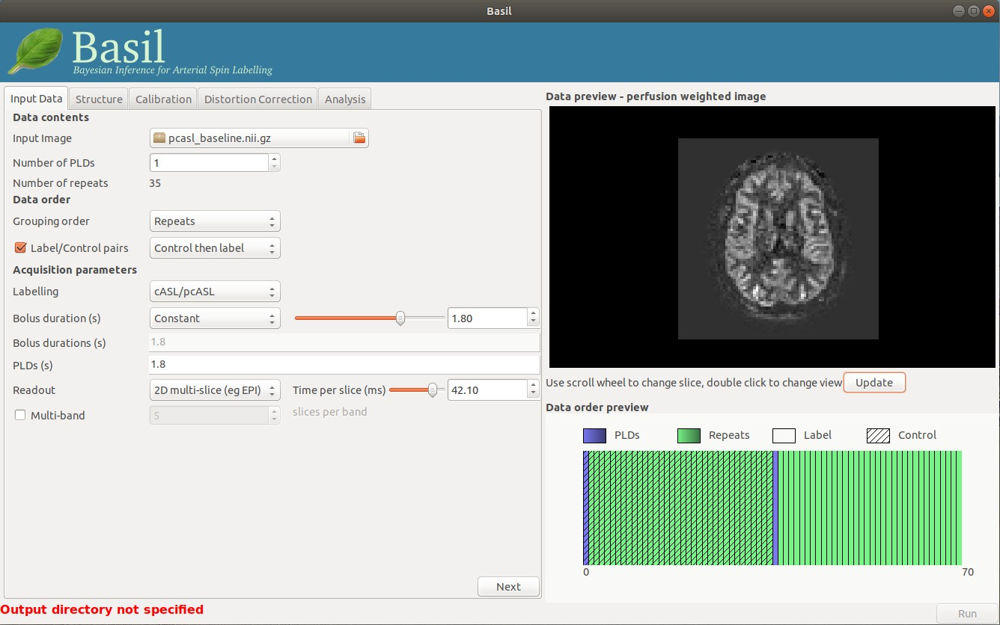
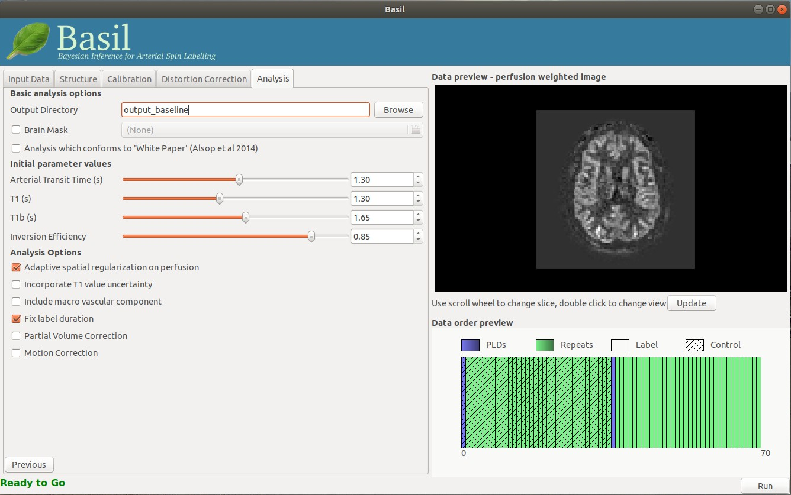
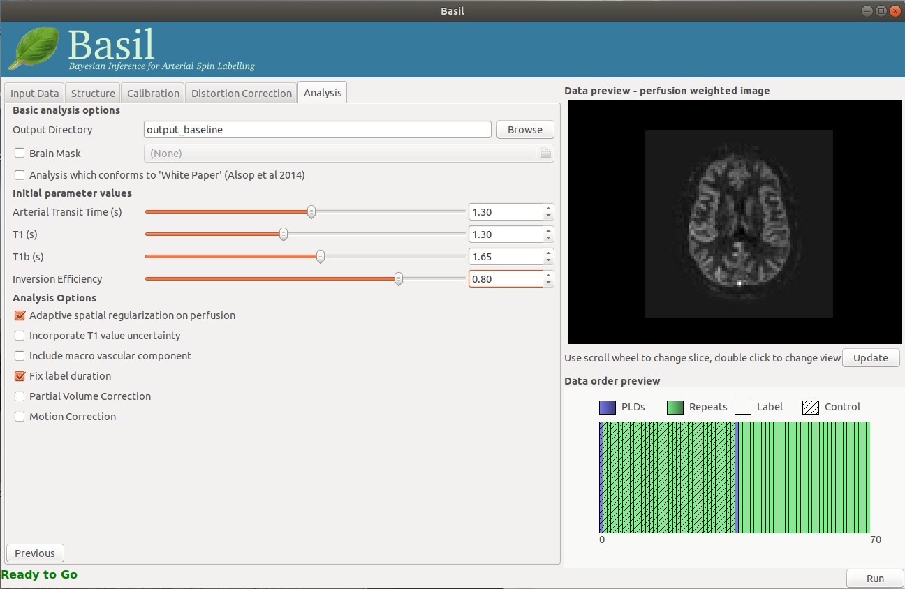
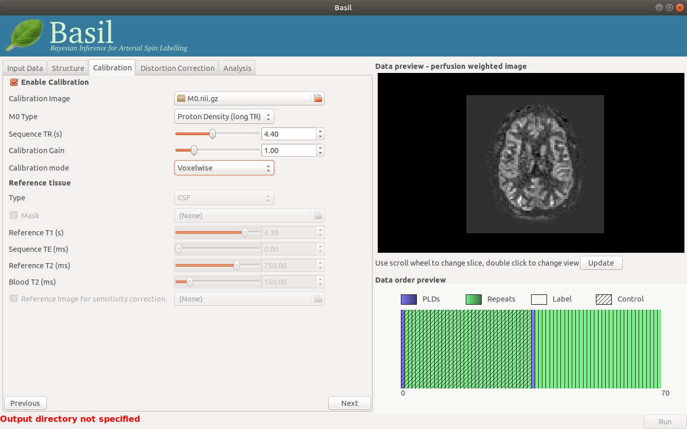
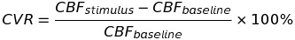
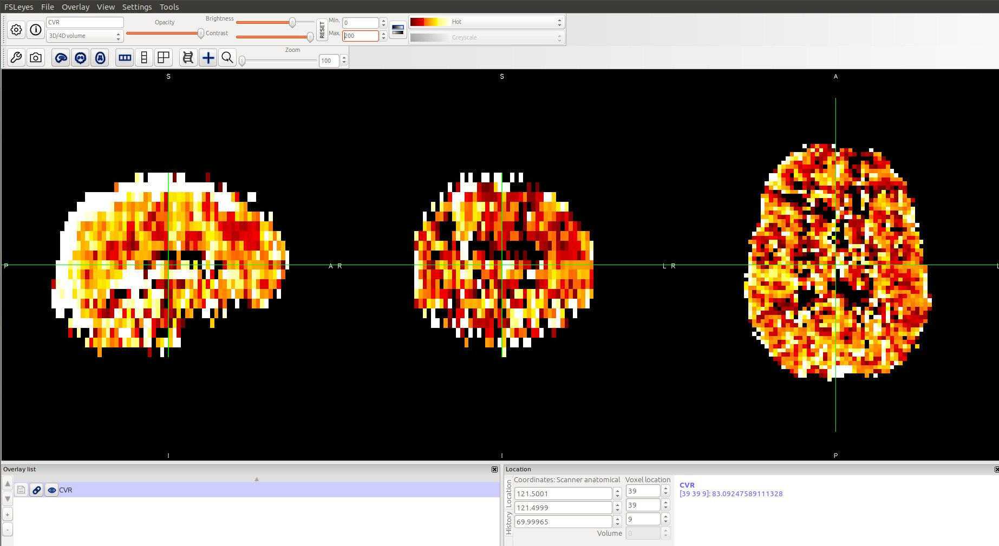

Cerebrovascular Reserve Quantification Using ASL¶
CVR quantification using Single PLD pCASL¶
Introduction¶
Cerebrovascular reserve (CVR) is defined as the maximum change in perfusion in response to a vasoactive stimulus. CVR has become an important biomarker to assess tissue health and ASL offers a non-invasive technique to measure CVR in vivo. Measuring CVR requires the quantification of perfusion under two different physiological conditions: baseline and (physiologically) stimulated. In the baseline condition, it is common for us to follow the routine procedures where we acquire data while the subject is in a resting state in the scanner. In the stimulus condition, we need to administer a stimulus to manipulate the perfusion of the subject. The choice of the stimulus depends on the availability and the condition of the subject. Nevertheless, the key component in designing a CVR experiment is to change the perfusion of the subject to a different level (from the normal resting state level).
In this tutorial, we are going to illustrate an example CVR study in which CVR was quantified using PCASL and azetazolamide as the stimulus. Sample data can be downlowded here.
ASL Sequence¶
Single-PLD PCASL is used in this experiment, and the sequence parameters are similar to the ones in the ASL white paper. Specifically, the bolus duration is 1800ms, PLD is 1800ms, no background suppression, 2D EPI readout, and the gap between each slice is 42.1ms. There were 140 repeats in this data. The first 35 repeats were collected in resting condition. At repeat 35, acetazolamide was adminstered. The last 35 repeats were used as the data to quantify CBF in the stimulus condition. The data has already been split into separate data for the resting and stimulus conditions respectively. The full description of the parameters can be found in the reference paper of this tutorial. Calibration data was also acquired using a long TR of 4400ms and 6 repeats.
Data Analysis: Resting State Perfusion¶
We first quantify perfusion in the resting condition using the PCASL data of the resting state. We can use the BASIL GUI to estimate voxelwise perfusion values in absolute units. We can key in the sequence parameters in the GUI.
In order to calibrate the CBF into absolute units, we need to input the calibration data and select voxel-wise calibration.

Finally, we need to set up the output director. Now we can click Run.
Data Analysis: Stimulus State Perfusion¶
After quantifying the perfusion of the resting condition, we need to estimate the pwefuaion of the stimulus condition (in this case after the injection of acetazolamide). Since the data of the stimulus condition comes from the same scanning session of the resting state, the sequence parameters are exactly the same:
Similarly, we will use the same calibration data to calibrate the estimated perfusion into absolute units.
Before running the analysis, it is important to note that the inversion efficiency of PCASL may vary after the administration of acetazolamide. As noted in the ASL white paper, the inversion efficiency of PCASL is affected by the flow velocity of the arterial blood. In this example, the administration of acetazolamide increases the flow velocity, thus changing the inversion efficiency of PCASL. A separate analysis estimating the inversion efficiency post-acetazolamide is needed before quantifying CBF. This can be done by including a phase contrast MRI scan that gives the flow velocity information, which can be used for the estimation of inversion efficiency. The detailed description of this technique can be found in the reference paper of this tutorial. Nevertheless, it is still possible to assume the inversion efficiency to be unchanged if the flow velocity information is unavailable. In this tutorial, we will use a newly estimated (corrected) inversion efficiency value (0.80) to analyse the ASL data after the administration of acetazolamide:
Data Analysis: Quantifying CVR¶
After we have quantified the absolute perfusion of baseline and stimulus, we are going to apply the following formula to estimate CVR.
This can be done using the fslmaths command:
fslmaths output_stimulus/native_space/perfusion_calib -sub output_baseline/native_space/perfusion_calib -div output_baseline/native_space/perfusion_calib -mul 100 CVR
Results¶
Finally, we may use FSLeyes to view the CVR results:
